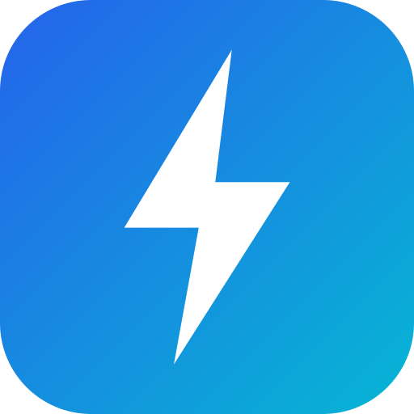
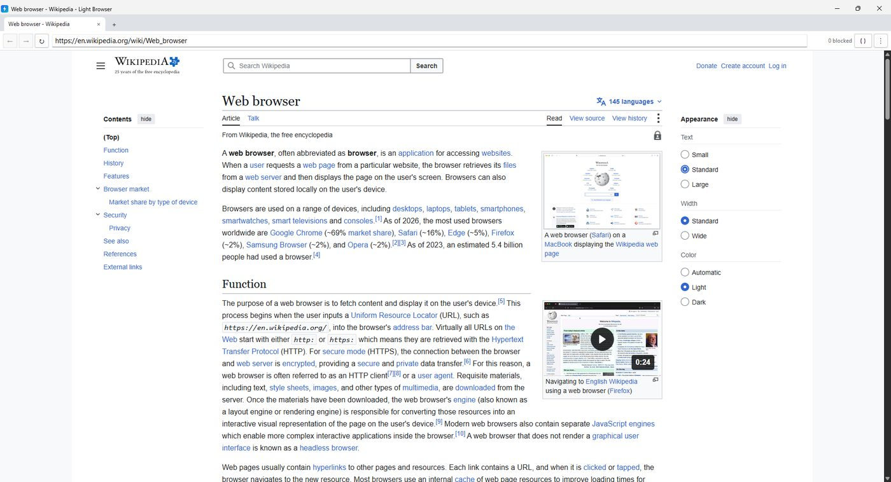

Tiny native shell
~2 MB C++ Win32 app. No Electron, no bundled engine. Rendering is Chromium via Microsoft Edge WebView2, which Windows 11 already ships.

Light BrowserA ~2 MB native Windows browser on the Chromium engine already inside Windows 11. Built-in ad blocker, tab sleeping, end-to-end-encrypted sync, one-click import from other browsers.

~2 MB C++ Win32 app. No Electron, no bundled engine. Rendering is Chromium via Microsoft Edge WebView2, which Windows 11 already ships.
Network-level host and URL rules plus cosmetic filters. Every request passes through it. A live counter shows what was blocked.
Background tabs drop to a low memory target and get suspended after 30 seconds idle. Near-zero CPU until you click them.
Bookmarks, history and saved logins from Chrome, Edge, Brave, Opera, Vivaldi and Firefox, in one click.
Bookmarks and passwords sync across devices. Encrypted on your PC with your passphrase. The server only ever sees ciphertext.
Full Chromium DevTools with F12 or right-click → Inspect. Google search straight from the address bar.
LightBrowser-Setup.exe.sha256.
Latest: checksum file.(Get-FileHash LightBrowser-Setup.exe -Algorithm SHA256).Hash.ToLower()
Get-Content LightBrowser-Setup.exe.sha256| Ctrl+T / Ctrl+W | New tab / close tab |
| Ctrl+L | Address bar |
| Ctrl+D | Bookmark page |
| F12 | Inspect (DevTools) |
| F11 | Fullscreen |
| Ctrl+Shift+Del | Clear cache |